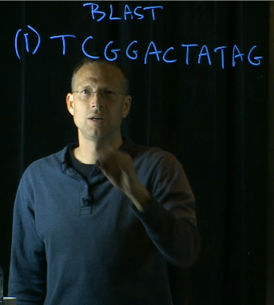

Keynote
The Promise and Pitfalls Of Computational Biology,
Or How To Convince Biologists You Do More Than Push Buttons On A Keyboard.

Dr. Scott T. Kelley,
San Diego State University
Abstract
Biological data, particularly from DNA sequence projects such as the Human Genome and Human Microbiome projects, has accumulated at an unprecedented rate. Other data types, including proteomics and metabolomics promise to add orders of magnitude more information to databases. In fact, the rate of increase in molecular datasets has already outstripped Moore's law. Thus, the computational analysis and interpretation of molecular datasets (aka, bioinformatics) large and small has become integral to all biology and impossible to avoid even for wet-bench scientists. Here I present an overview of computer applications in the biological sciences. I will discuss the power of algorithms for prediction and discovery, how bioinformatics is often for granted by biologists who rely on it, and I will give examples of bioinformatics discoveries. I will also talk about the limitations of computational biology and the future challenges for computational biology.
Bio
Scott Kelley, Ph.D. is a Professor of Biology at San Diego State University, where he has worked since 2002. He has a Ph.D. from the University of Colorado and a B.A. from Cornell University. His lab at San Diego State University combines phylogenetic methods and culture-independent molecular tools to study environmental microbiology. Dr. Kelley has published extensively on the Human Microbiome, the Built Environment and many natural environments. He has also published many papers on bioinformatics and has helped develop some widely-used tools for analyzing next-generation sequence dataset for microbial communities. He has received research grants from the National Institute of Health (NIH), the National Science Foundation (NSF), the Alexander von Humboldt Foundation, and the Alfred P. Sloan Foundation among others. He has served on the Scientific Advisory Board of the Clorox Corporation and his work has been featured in the New York Times, NPR, CBC (Canada), Time Magazine, and Der Spiegel among numerous others. He is also the author of an upcoming bioinformatics textbook Computational Biology: a Hypertextbook
, and its associated platform for mobile devices (kelleybioinfo.org), aimed at biologists afraid of computers.